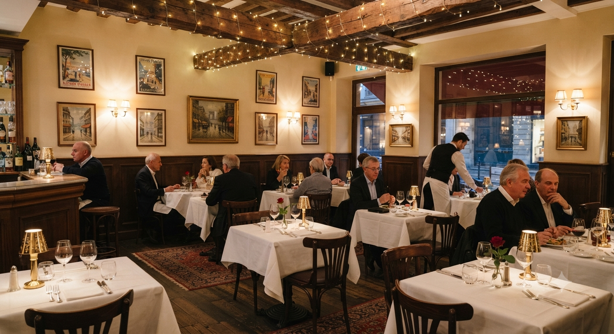
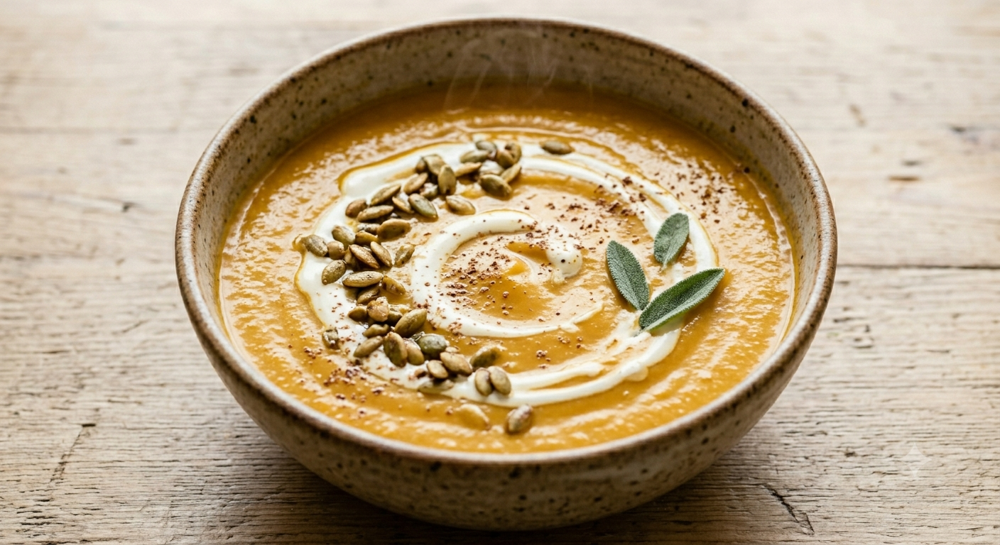
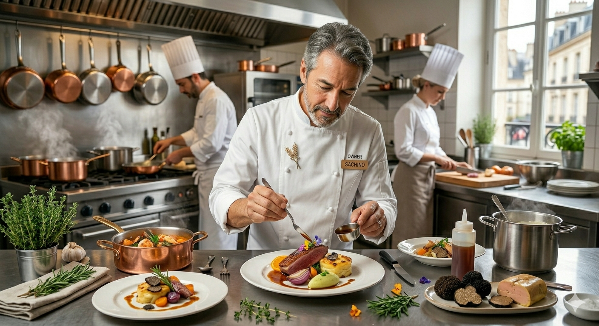

優しさが薫く、函館のひと皿
【完全予約制】至福の隠れ家へ

函館近郊の肥沃な大地で育ったカボチャ。そのポテンシャルを最大限に引き出すのは、フランスの星付き店で磨き上げた松永シェフの感性。一口運べば、野菜が持つ「優しさ」が心まで解きほぐします。
「ラ・ロシェル南青山」にて料理の匠人・坂井宏行氏に師事し、フレンチの真髄を学んだ7年半。その後、本場フランスの3つ星「ミッシェル・トラマ」やリヨンの名店で副料理長として腕を振るいました。
松永和之が辿り着いたのは、妻の故郷・函館。日本人らしい繊細な表現で、世界基準の技術を身近に届ける。その想いは一軒家の隠れ家で、今日も静かに、そして力強く続いています。

"優しさを提供することが、料理の本質。"
― Owner Chef Kazuyuki Matsunaga
記念日を彩る、行き届いたサービスと感動の演出。
北海道の特産品を最も美味しい状態で、驚きとともに。
アレルギー対応、車椅子対応も万全な、誰もが寛げる空間。
「一組ずつスペースが確保されていて広々。サービスが行き届いている。他の季節にまた来たいです。」
Guest Review
「気さくなシェフにお見送りいただき、料理にもシェフにも感動。幸せな気分になりました。」
Guest Review
極上の料理とワインの余韻を、ご自宅に持ち帰った後もずっと愉しんでいただくために。特別なひとときに華を添える新たなサービスを準備しております。
その日に味わった一皿のこだわり食材や北海道の旬、ソムリエが厳選したペアリングワインのマリアージュ背景を詳しく記録。
ご来店日やおふたりのお名前、お誕生日や結婚記念日といった特別なタイトルを印字。世界にひとつだけのメニューカードをお届けします。
上質な質感の用紙に箔押しを施した洗練されたデザイン。お食事の思い出として、アルバムやフレームに飾っていただける仕上がりです。